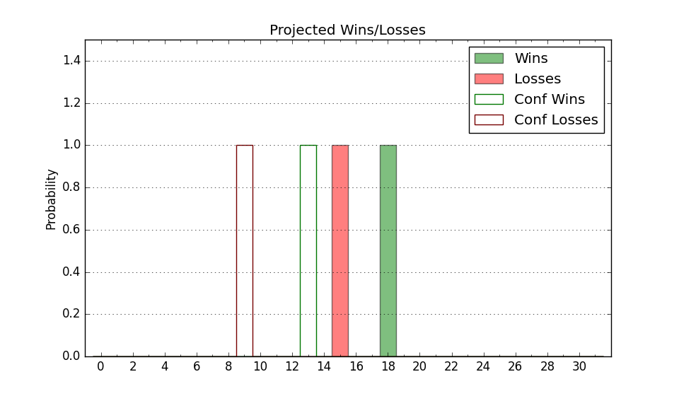

| Home | Game Probabilities | Conferences | Preseason Predictions | Odds Charts | NCAA Tournament |
| City: | Moscow, Idaho | |
| Conference: | Big Sky (4th)
| |
| Record: | 13-9 (Conf) 18-14 (Overall) | |
| Ratings: | Comp.: 5.1 (122nd) Net: 5.1 (122nd) Off: 111.0 (147th) Def: 105.8 (113th) SoR: 0.0 (96th) |
| Remaining | ||||||
|---|---|---|---|---|---|---|
| Date | Opponent | Win Prob | Pred. | |||
| Previous | Game Score | |||||
| Date | Opponent | Win Prob | Result | Off | Def | Net |
| 11/3 | @Washington St. (125) | 36.9% | W 83-81 | 10.4 | 0.6 | 11.0 |
| 11/12 | @San Diego (225) | 60.0% | L 74-78 | -4.3 | -7.5 | -11.8 |
| 11/15 | @UC San Diego (127) | 37.6% | L 67-75 | -6.0 | 0.4 | -5.5 |
| 11/26 | (N) Cal St. Northridge (180) | 65.0% | W 78-64 | -2.3 | 16.8 | 14.6 |
| 11/28 | (N) Sam Houston St. (108) | 46.0% | L 68-94 | -6.9 | -31.9 | -38.8 |
| 12/3 | North Dakota (271) | 89.0% | W 90-58 | 13.0 | 15.9 | 29.0 |
| 12/6 | @South Dakota St. (186) | 51.4% | W 84-81 | 14.4 | -11.0 | 3.5 |
| 12/10 | @Notre Dame (90) | 25.5% | L 65-80 | 0.8 | -10.2 | -9.5 |
| 12/21 | @Cal Poly (214) | 58.0% | W 83-80 | -9.8 | 11.2 | 1.4 |
| 12/23 | @Cal St. Bakersfield (324) | 83.4% | L 63-64 | -19.2 | 2.7 | -16.5 |
| 1/3 | Eastern Washington (175) | 76.7% | W 84-81 | 7.1 | -9.0 | -1.9 |
| 1/8 | Montana (181) | 77.5% | L 73-79 | -5.4 | -11.1 | -16.6 |
| 1/10 | Montana St. (117) | 63.4% | W 92-89 | 25.9 | -24.9 | 1.0 |
| 1/15 | @Idaho St. (200) | 54.9% | L 68-76 | -12.7 | -9.4 | -22.1 |
| 1/17 | @Weber St. (176) | 49.3% | W 75-67 | -11.7 | 22.2 | 10.6 |
| 1/22 | Sacramento St. (241) | 86.1% | W 86-76 | 4.5 | -2.2 | 2.2 |
| 1/24 | Portland St. (135) | 69.6% | L 66-69 | -7.0 | -4.3 | -11.3 |
| 1/29 | @Northern Colorado (131) | 38.5% | L 83-91 | 5.1 | -6.0 | -1.0 |
| 1/31 | @Northern Arizona (302) | 77.2% | W 79-62 | 5.2 | 8.6 | 13.8 |
| 2/5 | @Montana St. (117) | 33.7% | L 66-73 | -16.8 | 6.3 | -10.6 |
| 2/7 | @Montana (181) | 50.3% | L 68-73 | -12.9 | 3.7 | -9.1 |
| 2/12 | Weber St. (176) | 76.8% | L 72-83 | -3.9 | -24.9 | -28.8 |
| 2/14 | Idaho St. (200) | 80.5% | W 99-69 | 18.2 | 9.1 | 27.3 |
| 2/19 | @Portland St. (135) | 40.2% | L 67-77 | -1.8 | -8.0 | -9.9 |
| 2/21 | @Sacramento St. (241) | 64.6% | W 86-80 | 7.5 | -4.3 | 3.2 |
| 2/26 | Northern Arizona (302) | 92.0% | W 78-58 | 7.7 | 2.2 | 9.9 |
| 2/28 | Northern Colorado (131) | 68.1% | L 67-76 | -13.4 | -7.9 | -21.2 |
| 3/2 | @Eastern Washington (175) | 49.1% | W 85-81 | 17.3 | -8.4 | 8.8 |
| 3/7 | (N) Sacramento St. (241) | 77.1% | W 68-45 | -20.5 | 34.1 | 13.6 |
| 3/8 | @Montana St. (117) | 33.7% | W 78-74 | 11.7 | 1.2 | 12.9 |
| 3/10 | @Eastern Washington (175) | 49.1% | W 81-68 | 7.0 | 20.1 | 27.1 |
| 3/11 | @Montana (181) | 50.3% | W 77-66 | 6.1 | 17.9 | 24.1 |
| Stats & Trends | |||||
|---|---|---|---|---|---|
| Current | Day | Week | Month | Season | |
| Composite | 5.1 | -0.0 | +2.5 | +3.0 | +10.1 |
| Comp Rank | 122 | -- | +16 | +23 | +63 |
| Net Efficiency | 5.1 | -0.0 | +2.5 | +2.7 | -- |
| Net Rank | 122 | -- | +16 | +21 | -- |
| Off Efficiency | 111.0 | -0.0 | +0.1 | +1.4 | -- |
| Off Rank | 147 | -2 | -3 | +5 | -- |
| Def Efficiency | 105.8 | +0.0 | +2.4 | +1.3 | -- |
| Def Rank | 113 | -1 | +44 | +26 | -- |
| SoS Rank | 141 | -- | +6 | -15 | -- |
| Exp. Wins | 18.0 | -- | +4.0 | +3.7 | +2.9 |
| Exp. Conf Wins | 13.0 | -- | +4.0 | +3.7 | +1.8 |
| Conf Champ Prob | 0.0 | -- | -- | -0.4 | -18.1 |

| Advanced Stats | ||
|---|---|---|
| Stat | Value | Rank |
| Off Eff FG % | 0.513 | 180 |
| Off Ast Ratio | 0.128 | 295 |
| Off ORB% | 0.288 | 219 |
| Off TO Rate | 0.138 | 123 |
| Off FT Ratio | 0.339 | 222 |
| Def Eff FG % | 0.496 | 108 |
| Def Ast Ratio | 0.131 | 55 |
| Def ORB% | 0.252 | 24 |
| Def TO Rate | 0.132 | 275 |
| Def FT Ratio | 0.406 | 299 |